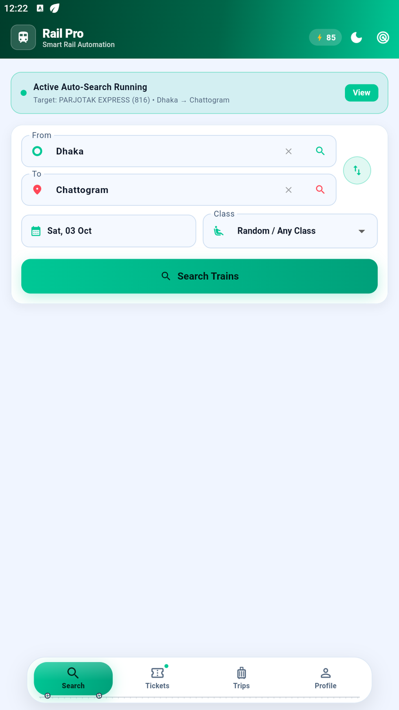
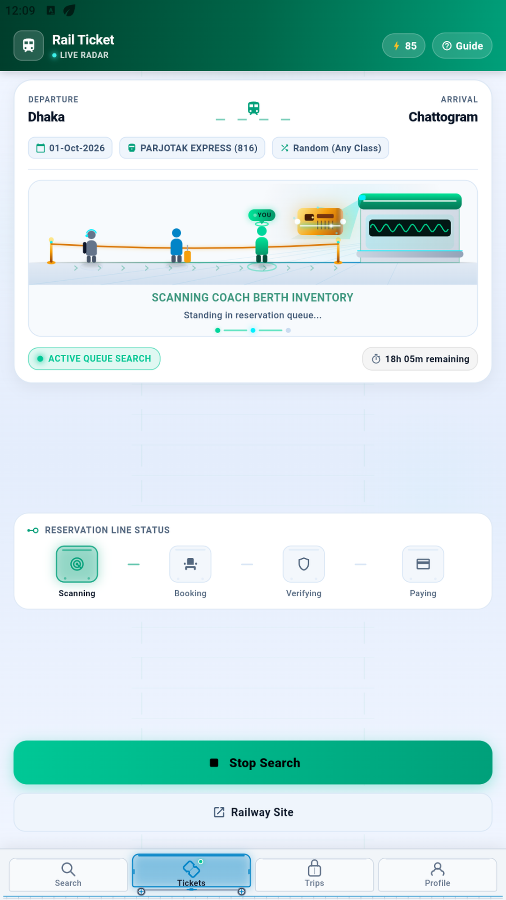
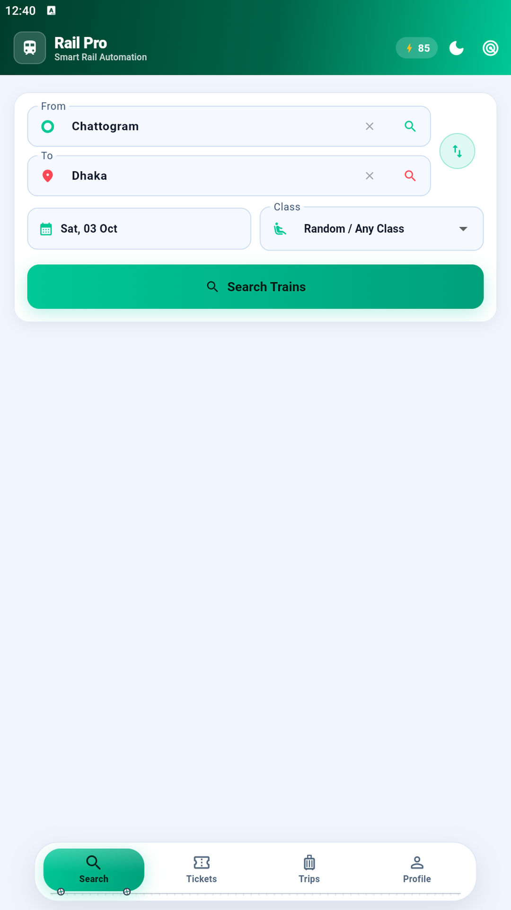

আপনার সার্চ, আমাদের নজর।
স্টেশন, তারিখ, শ্রেণি ও ট্রেন বেছে নিন। Rail Pro খালি আসনের খোঁজ রাখতে থাকবে।
বাংলাদেশ রেলওয়ে যাত্রায় আপনার সঙ্গী
ট্রেনের টিকিট দ্রুত শেষ হয়। তবে কেউ টিকিট ফেরত দিলে বা বাড়তি বগি যুক্ত হলে আবার আসন পাওয়া যেতে পারে। Rail Pro-তে সার্চ দিয়ে রাখুন—আসন খুললে জানাবে এবং অটো বুকিং চালু থাকলে বুকিং শুরু করবে।
সার্চ চলুক, আপনি নিজের কাজে থাকুন।
চলুন, যাত্রা শুরু হোক
ফেরত টিকিট। বাড়তি বগি। নতুন সুযোগ।
সারাদিন নিজে চেক করা সম্ভব নয়। সেই কাজটাই সহজ করে Rail Pro।
স্টেশন, তারিখ, শ্রেণি ও ট্রেন বেছে নিন। Rail Pro খালি আসনের খোঁজ রাখতে থাকবে।
আসন পেলে ট্রেনের হুইসেল ও বাংলা কণ্ঠসহ নোটিফিকেশন পাবেন। চাপ দিয়ে বুকিংয়ে এগিয়ে যান।
অটো বুকিং চালু থাকলে রিজার্ভেশন শুরু হবে। বিভিন্ন বগিতে সর্বোচ্চ চার আসন। টিকিট নিশ্চিত করতে পেমেন্ট করুন।
আপনার SMS সম্মতি পেলে রেলওয়ের OTP স্বয়ংক্রিয়ভাবে যাচাই হতে পারে। নিজে লেখার সুযোগও আছে।
সার্চ থেকে রিজার্ভেশন
রুট ও বুকিংয়ের পছন্দ ঠিক করুন।
আসন পাওয়া গেলেই খবর পান।
অফিসিয়াল রেলওয়ে পোর্টালে পেমেন্ট করুন।
আসন পাওয়া বা বুকিং সফল হওয়ার নিশ্চয়তা নেই।
বারবার নিজে চেক করার প্রয়োজন নেই।
এটি নমুনা ডেমো। এখানে আসল সার্চ বা বুকিং হয় না।



পরের গন্তব্য: আপনার যাত্রা
সার্চ দিন। চাইলে অটো বুকিং চালু করুন। আপনার পরের আসনের খোঁজ রাখবে Rail Pro।
Android 7.0+ · স্বাক্ষরিত রিলিজ APK।
বুকিংয়ের আগে
না। আসন, যাচাই ও টিকিট নিশ্চিত হওয়া অফিসিয়াল রেলওয়ে সিস্টেমের ওপর নির্ভর করে। রিজার্ভেশনের মেয়াদ শেষ হওয়ার আগে পেমেন্ট করতে হবে।
সক্রিয় মনিটরিং Android foreground service ব্যবহার করে। নোটিফিকেশন ডিভাইসের সেটিংস ও অনুমতির ওপর নির্ভর করে। মানুষের যাচাই লাগলে অ্যাপ খুলতে হবে।
Rail Pro স্বতন্ত্র অ্যাপ। এটি বাংলাদেশ রেলওয়ে বা Shohoz-Synesis-Vincen JV-এর অনুমোদিত বা পরিচালিত অ্যাপ নয়। বুকিং ও পেমেন্ট অফিসিয়াল রেলওয়ের মাধ্যমে হয়।